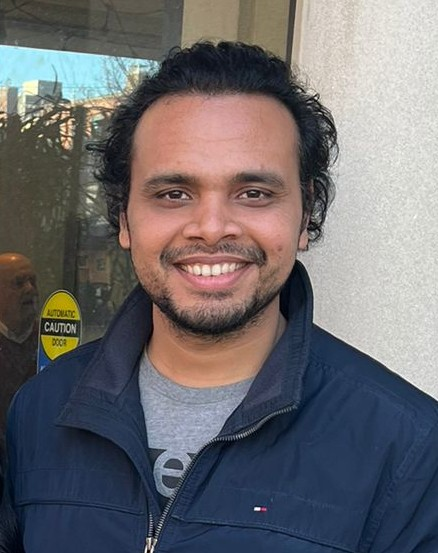

Research Fellow
Institute of Data Science
National University of Singapore
Email: abarik(at)nus(dot)edu(dot)sg
CV: Click Here
I am a Research Fellow in the Institute of Data Science at the National University of Singapore (NUS), where I am hosted by Prof. Vincent Y. F. Tan. Prior to joining NUS, I obtained my Ph.D. from Department of Computer Science at Purdue University with Prof. Jean Honorio as my advisor. I completed my B.Tech and M.Tech (Dual Degree) from Indian Institute of Technology, Madras.
Theoretical and computational aspect of Optimization, Machine Learning, Information Theory and High Dimensional Data Analytics.
I am interested in solving optimization problems in both online and offline setting. My main focus revolves around developing provably correct learning algorithms whith theoretical gurantees related to convergence, sample complexity and computational complexity for machine learning problems. In past, I have worked on providing theoretical guarantees for combinatorial problems using continuous relaxation. For example, I have worked on learning Bayesian networks with low rank conditional probability tables. My research expands beyond the confines of convex problems. As an example of that, I have worked on developing provable theoretical bounds for fair sparse regression problem using invex relaxation.
In this work, we study the robust phase retrieval problem where the task is to recover an unknown signal $\theta^* \in \mathbb{R}^d$ in the presence of potentially arbitrarily corrupted magnitude-only linear measurements. We propose an alternating minimization approach that incorporates an oracle solver for a non-convex optimization problem as a subroutine. Our algorithm guarantees convergence to $\theta^*$ and provides an explicit polynomial dependence of the convergence rate on the fraction of corrupted measurements. We then provide an efficient construction of the aforementioned oracle under a sparse arbitrary outliers model and offer valuable insights into the geometric properties of the loss landscape in phase retrieval with corrupted measurements. Our proposed oracle avoids the need for computationally intensive spectral initialization, using a simple gradient descent algorithm with a constant step size and random initialization instead. Additionally, our overall algorithm achieves nearly linear sample complexity, $\mathcal{O}(d \mathrm{polylog}(d))$.
We study a robust online convex optimization framework, where an adversary can introduce outliers by corrupting loss functions in an arbitrary number of rounds k, unknown to the learner. Our focus is on a novel setting allowing unbounded domains and large gradients for the losses without relying on a Lipschitz assumption. We introduce the Log Exponential Adjusted Robust and iNvex (LEARN) loss, a non-convex (invex) robust loss function to mitigate the effects of outliers and develop a robust variant of the online gradient descent algorithm by leveraging the LEARN loss. We establish tight regret guarantees (up to constants), in a dynamic setting, with respect to the uncorrupted rounds and conduct experiments to validate our theory. Furthermore, we present a unified analysis framework for developing online optimization algorithms for non-convex (invex) losses, utilizing it to provide regret bounds with respect to the LEARN loss, which may be of independent interest.
Federated learning provides a framework to address the challenges of distributed computing, data ownership and privacy over a large number of distributed clients with low computational and communication capabilities. In this paper, we study the problem of learning the exact support of sparse linear regression in the federated learning setup. We provide a simple communication efficient algorithm which only needs one-shot communication with the centralized server to compute the exact support. Our method does not require the clients to solve any optimization problem and thus, can be run on devices with low computational capabilities. Our method is naturally robust to the problems of client failure, model poisoning and straggling clients. We formally prove that our method requires a number of samples per client that is polynomial with respect to the support size, but independent of the dimension of the problem. We require the number of distributed clients to be logarithmic in the dimension of the problem. If the predictor variables are mutually independent then the overall sample complexity matches the optimal sample complexity of the non-federated centralized setting. Furthermore, our method is easy to implement and has an overall polynomial time complexity.
In this paper, we study the problem of learning the set of pure strategy Nash equilibria and the exact structure of a continuous-action graphical game with quadratic payoffs by observing a small set of perturbed equilibria. A continuous-action graphical game can possibly have an uncountable set of Nash euqilibria. We propose a $\ell_12$− block regularized method which recovers a graphical game, whose Nash equilibria are the ϵ-Nash equilibria of the game from which the data was generated (true game). Under a slightly stringent condition on the parameters of the true game, our method recovers the exact structure of the graphical game. Our method has a logarithmic sample complexity with respect to the number of players. It also runs in polynomial time.
In this paper, we study the problem of sparse mixed linear regression on an unlabeled dataset that is generated from linear measurements from two different regression parameter vectors. Since the data is unlabeled, our task is not only to figure out a good approximation of the regression parameter vectors but also to label the dataset correctly. In its original form, this problem is NP-hard. The most popular algorithms to solve this problem (such as Expectation-Maximization) have a tendency to stuck at local minima. We provide a novel invex relaxation for this intractable problem which leads to a solution with provable theoretical guarantees. This relaxation enables exact recovery of data labels. Furthermore, we recover a close approximation of the regression parameter vectors which match the true parameter vectors in support and sign. Our formulation uses a carefully constructed primal dual witnesses framework for the invex problem. Furthermore, we show that the sample complexity of our method is only logarithmic in terms of the dimension of the regression parameter vectors.
Stochastic high dimensional bandit problems with low dimensional structures are useful in different applications such as online advertising and drug discovery. In this work, we propose a simple unified algorithm for such problems and present a general analysis framework for the regret upper bound of our algorithm. We show that under some mild unified assumptions, our algorithm can be applied to different high dimensional bandit problems. Our framework utilizes the low dimensional structure to guide the parameter estimation in the problem, therefore our algorithm achieves the best regret bounds in the LASSO bandit, as well as novel bounds in the low-rank matrix bandit, the group sparse matrix bandit, and in a new problem: the multi-agent LASSO bandit.
In this paper, we analyze the information theoretic lower bound on the necessary number of samples needed for recovering a sparse signal under different compressed sensing settings. We focus on the weighted graph model, a model-based framework proposed by Hegde et al. (2015), for standard compressed sensing as well as for one-bit compressed sensing. We study both the noisy and noiseless regimes. Our analysis is general in the sense that it applies to any algorithm used to recover the signal. We carefully construct restricted ensembles for different settings and then apply Fano's inequality to establish the lower bound on the necessary number of samples. Furthermore, we show that our bound is tight for one-bit compressed sensing, while for standard compressed sensing, our bound is tight up to a logarithmic factor of the number of non-zero entries in the signal.
In this paper, we study the problem of learning the exact structure of continuous-action games with non-parametric utility functions. We propose an $\ell_1$ regularized method which encourages sparsity of the coefficients of the Fourier transform of the recovered utilities. Our method works by accessing very few Nash equilibria and their noisy utilities. Under certain technical conditions, our method also recovers the exact structure of these utility functions, and thus, the exact structure of the game. Furthermore, our method only needs a logarithmic number of samples in terms of the number of players and runs in polynomial time. We follow the primal-dual witness framework to provide provable theoretical guarantees.
In this paper, we study the problem of fair sparse regression on a biased dataset where bias depends upon a hidden binary attribute. The presence of a hidden attribute adds an extra layer of complexity to the problem by combining sparse regression and clustering with unknown binary labels. The corresponding optimization problem is combinatorial, but we propose a novel relaxation of it as an \emph{invex} optimization problem. To the best of our knowledge, this is the first invex relaxation for a combinatorial problem. We show that the inclusion of the debiasing/fairness constraint in our model has no adverse effect on the performance. Rather, it enables the recovery of the hidden attribute. The support of our recovered regression parameter vector matches exactly with the true parameter vector. Moreover, we simultaneously solve the clustering problem by recovering the exact value of the hidden attribute for each sample. Our method uses carefully constructed primal dual witnesses to provide theoretical guarantees for the combinatorial problem. To that end, we show that the sample complexity of our method is logarithmic in terms of the dimension of the regression parameter vector.
In this paper, we consider a zero-order stochastic oracle model of estimating definite integrals. In this model, integral estimation methods may query an oracle function for a fixed number of noisy values of the integrand function and use these values to produce an estimate of the integral. We first show that the information-theoretic error lower bound for estimating the integral of a d-dimensional function over a region with l∞ radius r using at most T queries to the oracle function is $\Omega(2^d r^{d+1} \sqrt{d/T})$. Additionally, we find that the Gaussian Quadrature method under the same model achieves a rate of $O(26d r^d/\sqrt{T})$ for functions with zero fourth and higher-order derivatives with respect to individual dimensions, and for Gaussian oracles, this rate is tight. For functions with nonzero fourth derivatives, the Gaussian Quadrature method achieves an upper bound which is not tight with the information-theoretic lower bound. Therefore, it is not minimax optimal, so there is space for the development of better integral estimation methods for such functions.
In this paper, we study the problem of structure learning for Bayesian networks in which nodes take discrete values. The problem is NP-hard in general but we show that under certain conditions we can recover the true structure of a Bayesian network with sufficient number of samples. We develop a mathematical model which does not assume any specific conditional probability distributions for the nodes. We use a primal-dual witness construction to prove that, under some technical conditions on the interaction between node pairs, we can do exact recovery of the parents and children of a node by performing group $\ell_{12}$-regularized multivariate regression. Thus, we recover the true Bayesian network structure. If degree of a node is bounded then the sample complexity of our proposed approach grows logarithmically with respect to the number of nodes in the Bayesian network. Furthermore, our method runs in polynomial time.
In this paper, we provide a method to learn the directed structure of a Bayesian network using data. The data is accessed by making conditional probability queries to a black-box model. We introduce a notion of simplicity of representation of conditional probability tables for the nodes in the Bayesian network, that we call "low rankness". We connect this notion to the Fourier transformation of real valued set functions and propose a method which learns the exact directed structure of a `low rank` Bayesian network using very few queries. We formally prove that our method correctly recovers the true directed structure, runs in polynomial time and only needs polynomial samples with respect to the number of nodes. We also provide further improvements in efficiency if we have access to some observational data.
We analyze the necessary number of samples for sparse vector recovery in a noisy linear prediction setup. This model includes problems such as linear regression and classification. We focus on structured graph models. In particular, we prove that sufficient number of samples for the weighted graph model proposed by Hegde and others is also necessary. We use the Fano's inequality on well constructed ensembles as our main tool in establishing information theoretic lower bounds.